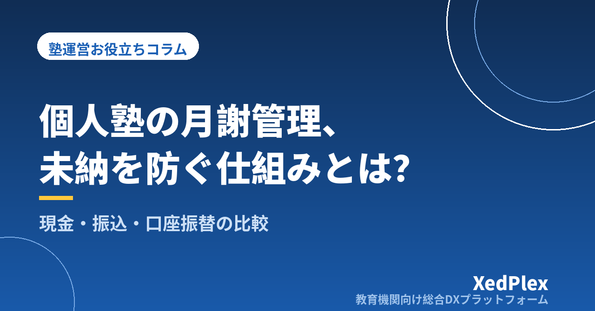

個人塾の月謝管理・集金方法まとめ｜未納を防ぐ仕組みと現金・振込・口座振替の比較

月謝の集金は、個人塾の運営で最も神経を使う業務のひとつです。金額を間違えれば信頼に関わり、未納の督促は言い出しづらく、月末の入金確認には時間がかかる。それでいて、集金業務は塾の売上を1円も増やしません。
この記事では、個人塾・小規模塾で使われている主な集金方法の比較と、未納・集金漏れが起きる構造的な原因、そして月末の照合作業を減らす管理の仕組みを解説します。
主な集金方法の比較
個人塾で使われる集金方法は大きく4つあります。それぞれに向き不向きがあります。
| 方法 | 長所 | 短所 |
|---|---|---|
| 現金（月謝袋） | 手数料ゼロ／導入が簡単／保護者に説明不要 | 持参忘れ・紛失リスク／受け取り記録の手間／生徒に現金を持たせる不安 |
| 銀行振込 | 導入が簡単／記録が通帳に残る | 振込手数料を誰が負担するか問題／名義が違うと照合が大変／振り込み忘れが起きる |
| 口座振替（自動引き落とし） | 未納が構造的に起きにくい／毎月の手間がほぼゼロ | 導入手続きと手数料／少人数だと割高になる場合がある |
| キャッシュレス・オンライン決済 | 保護者の利便性が高い／記録が自動で残る | 決済手数料（数％）／導入の設定作業 |
結論からいえば、生徒数が増えるほど「自動で引き落とされ、記録が自動で残る」方法が有利になります。現金や振込は一件ごとの確認作業が人力になるため、生徒数に比例して塾長の負担が増え続けるからです。
未納・集金漏れはなぜ起きるのか
未納の大半は、保護者の悪意ではなく「忘れ」と「認識ズレ」で起きます。
- 振込期日を忘れていた（保護者側の忘れ）
- 講習費や教材費が上乗せされた月に、いつもの金額だけ振り込んだ（認識ズレ）
- 塾側が入金を確認しそびれて、未納に気づいたのが2か月後（塾側の漏れ）
特に3つ目は深刻で、時間が経つほど督促は言い出しにくくなります。「先月分もまだいただいていなくて…」という連絡を送る気まずさは、多くの塾長が経験しているはずです。
月謝管理を楽にする3つの運用ルール
1. 請求は「毎月固定の日」に確定させる
毎月○日に当月（または翌月）の請求額を確定し、講習費・教材費・欠席調整などの変動分もその時点で反映します。請求のたびに金額を計算し直す運用は、ミスと認識ズレの温床です。
2. 請求額は書面（またはデジタル）で事前に通知する
「今月は講習費込みで○円です」という通知が事前にあるだけで、認識ズレによる未納は大きく減ります。紙のお知らせでも、メールやアプリ通知でも構いません。重要なのは金額の内訳が残る形で伝えることです。
3. 入金確認は「未納リスト」を作る形で行う
入金を確認したら消し込み、月末時点で残った人だけをリスト化する。この「未納だけが浮かび上がる」形にしておくと、確認漏れがなくなり、リマインドもすぐ送れます。エクセルでも可能ですが、生徒数が増えると請求・入金・消し込みを一元管理できるシステムの方が確実です。
集金方法を変えるときの注意点
現金や振込から口座振替・オンライン決済に切り替える場合は、次の点に気をつけてください。
- 切り替えは新年度など区切りの良い時期に：年度途中の変更は保護者への説明コストが高くなります
- 手数料の扱いを先に決める：塾負担か保護者負担かを明確にし、募集要項や規約に書いておく
- 移行期間は二重管理になる前提で計画する：全家庭が一斉に切り替わることはまずありません
まとめ
月謝集金の悩みは「未納の督促がつらい」という形で表面化しますが、根本の原因は、請求の確定・通知・入金確認が仕組み化されていないことにあります。まずは「請求確定日を固定する」「金額を事前通知する」「未納リスト方式で確認する」の3つを運用に取り入れてみてください。そのうえで、生徒数が増えて人力での照合が追いつかなくなってきたら、請求から入金管理までを一元化できる仕組みへの移行を検討するタイミングです。
この記事を書いた運営より
私たちは、個人経営・小規模の学習塾向けに、生徒管理・QRコードでの入退室記録・月次請求・保護者へのLINE/メール通知・AIによる学習支援までをひとつにまとめた教育機関向け総合DXプラットフォーム「XedPlex（ゼドプレックス）」を開発・提供しています。初期費用は0円、料金は生徒1名あたり月額300円（税込）から。生徒50名の塾なら月15,000円（税込）です。全国8つの教室で導入されており、導入塾には紹介ホームページの無料作成も行っています。機能の詳細説明はこちら。
XedPlexの詳細を見る